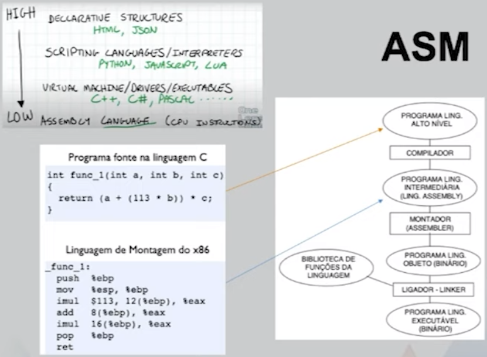
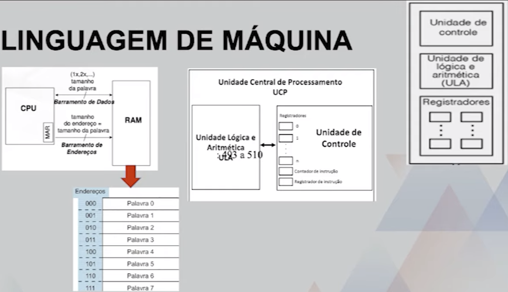
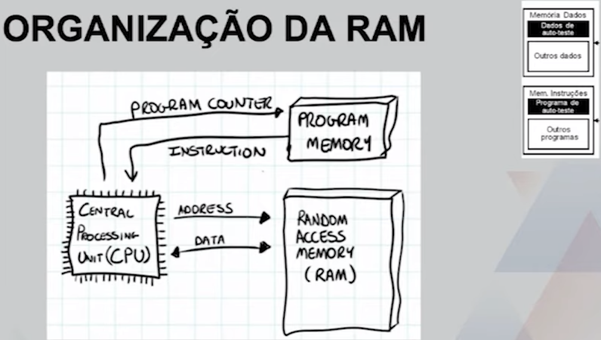
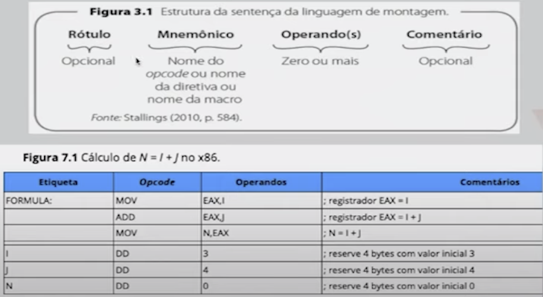
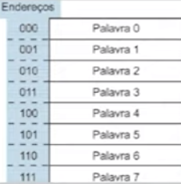
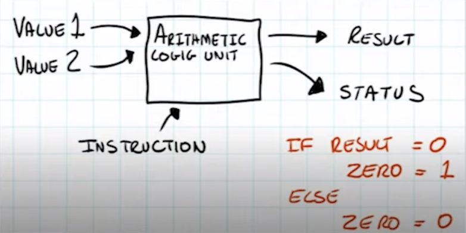

Disciplinas
-
SISTEMAS COMPUTACIONAIS. Concluído
Materiais
Vídeo 3 - Sistemas Computacionais - Linguagem Assembly (ASM). sendProf° ministrante: Alessandra Alaniz Macedo.
Conteúdo
Linguagem Assembly (ASM).
Assembly.
POR QUE ASM? QUANDO?
- ASM mostra o que o compilador faz e não faz
- indicado para otimização de operações básicas
- ASM é mais preciso para indicar detalhes de programas, como operações type-cast
- Bugs surgem no baixo nível e fica mais fácil manipulá-los com ASM
- Otimizar tempo, otimizar espaço, otimizar...
Linguagem de Máquina.
Organização da RAM.
INSTRUÇÃO ASM.
- Função (argumento1, argumento2)
opcode operando1 operando2
PRINCIPAIS INSTRUÇOES ASM.
- MOVE
- destino
- fonte
- ADD/SUB
- operando1
- operando2
- JUMP
- condição
- localização
1º PROGRAMA ASM.
2º PROGRAMA ASM
Calcular 3 * 10 é 10 + 10 + 10
9 ....
10 MOVE RA, [3]
11 MOVE RB, [4]
12 MOVE RC 0
13 ADD RC, RA
14 SUB RB, 1
15 JUMP NZ, 13

JUMP & NZ.

Calcular 3 * 10 é 10 + 10 + 10
9 ....
10 MOVE RA, [3]
11 MOVE RB, [4]
12 MOVE RC 0
13 ADD RC, RA
14 SUB RB, 1
15 JUMP NZ, 13
16 MOVE [5], RC
17 ......
BIBLIOGRAFIA.
- Tanenbaum, A & Austin, T. Organização estruturada de computadores. Apêndice C. Páginas: 493 a 510 (de 628 páginas). Editora: Editora Pearson. Edição: 6° (2013). Idioma: Português. ISBN: 9788581435398
- Corrêa, A. G. D. Organização e arquitetura de computadores. Unidade 3. Bibliografia Universitária Pearson. 131 a 143 (de 187) páginas. Ed. Pearson. 1º edição (2017) ISBN: 9788543020327